Bem vindo
Módulo I
Módulo II
Módulo III
Vantagens...Python é fácil de Ler, escrever e Aprender:• Como o Python é uma linguagem de programação de alto nível, se torna uma linguagem fácil de ler e entender. Python é mesmo fácil de aprender , e por isso é altamente recomendada para iniciantes hoje em dia. Com o Python você precisa de menos linhas de código para realizar as mesmas tarefas se comparado com linguagens como Java ou C++. ; O Python é uma linguagem interpretada:• Uma linguagem interpretada significa que o código é executado linha por linha, em caso de algum erroele para sua execução e avisa qual erro que ocorreu, e o Python funciona dessa forma. Python mostra somente um erro mesmo se o programa tiver vários erros, facilitando o processo de “debug” do código; Melhora a produtividade:• Por ser fácil de escrever e programar, Python melhora significativamente a produtividade dos programadores. Devido a sua simplicidade, desenvolvedores podem focar na solução do problema e não perdem muito tempo tentando entender a sintaxe. Você consegue fazer mais com menos código; Declaração de Variáveis:• O Python automaticamente define o tipo da variável durante sua execução, ou seja, o programador não precisa se preocupar em declarar variáveis e seus tipos. Para criá-las, basta utilizar um comando de atribuição, que define seu tipo e seu valor, conforme vemos no código abaixo: mensagem = 'Exemplo de mensagem!' numero = 36 real = 3.141592653589931 Python é multiplataforma:• O Python é uma linguagem que pode ser utilizada para diversas plataformas como Windows, Linux, Mac, Android… Isso é possível por ela ser uma linguagem interpretada, ou seja outras máquinas virtuais podem interpretar seu código; Python é Open Source:• Isso significa que você pode baixar o código-fonte, modificar e até distribuir sua versão do Python (Muitas empresas usam para casos específicos). Ele é gratuito para uso e distribuição; Desvantagens...Python é lento:• Geralmente linguagens interpretadas são mais lentas, e é por isso que o Python também sofre desse mal. A natureza dinâmica do Python é responsável pela sua baixa velocidade de processamento, pois existe um trabalho extra enquanto executa o código. Portanto é bom evitar o uso de Python em aplicações que precisam de uma melhor performance na velocidade; Python é ruim para Mobile:• Triste, mas é verdade. As aplicações escritas em Python geralmente são utilizadas em server-side. Isso ocorre, pelo motivo anterior: tem um baixo poder de processamento se comparado com outras linguagens para dispositivos móveis; Acesso ao Banco de Dados:• Todos já concordamos que programar em Python é mais fácil do que em outras linguagens. Mas quando interagimos com o banco de dados deixa a desejar. A camada de acesso ao Banco de Dados do Python ainda é muito primitiva e mal feita em comparação a outras linguagens de programação populares. Por exemplo: o java que utiliza JDBC e ODBC; Erros de Execução:• Já sabemos que no Python o tipo de variável pode ser modificado a qualquer momento, isso pode ser uma vantagem, como também uma desvantagem, pois essa situação se não for bem controlada pode causar Runtime Errors; Python utiliza muita memória:• Para prover toda sua simplicidade para o programador, a linguagem de Programação Python utiliza muita memória e um péssimo gerenciamento de memória, diferente do Java. Isso é uma desvantagem séria quando se vai desenvolver aplicações que requerem uma boa otimização de memória. Aplicações1. Desenvolvimento Web - Frameworks: Django, Flask, Pyramid. - Descrição: Python é usado para desenvolver backends de aplicações web, APIs, e sistemas completos. Frameworks como Django e Flask simplificam o processo de desenvolvimento web, permitindo a criação rápida de sites robustos e seguros. 2. Ciência de Dados e Análise de Dado - Ferramentas: Pandas, NumPy, Matplotlib, Seaborn, SciPy. - Descrição: Python é amplamente utilizado em ciência de dados para manipulação, análise, e visualização de grandes volumes de dados. É a linguagem preferida para trabalhos com dados devido à sua simplicidade e poderosas bibliotecas. 3. Machine Learning e Inteligência Artificial - Bibliotecas: TensorFlow, PyTorch, Scikit-learn, Keras. - Descrição: Python é a linguagem mais popular para o desenvolvimento de algoritmos de machine learning e IA. Ele fornece bibliotecas que permitem a criação e treinamento de modelos complexos, processamento de linguagem natural (NLP), reconhecimento de imagem, entre outros. 4. Automação e Scripting - Ferramentas: Selenium, BeautifulSoup, Requests, PyAutoGUI. - Descrição: Python é frequentemente usado para automatizar tarefas repetitivas, como web scraping, gerenciamento de arquivos, automação de processos de negócios e muito mais. Sua sintaxe simples torna-o ideal para scripts de automação. 5. Desenvolvimento de Jogos - Framework: Pygame, Panda3D, Godot (com suporte a Python). - Descrição: Python pode ser usado para criar jogos, especialmente jogos 2D simples. Frameworks como Pygame fornecem as ferramentas necessárias para o desenvolvimento de jogos e simulações. 6. Desenvolvimento de Aplicações de Desktop - Bibliotecas: Tkinter, PyQt, Kivy, wxPython. - Descrição: Python pode ser utilizado para desenvolver interfaces gráficas de usuário (GUIs) para aplicações de desktop. Ferramentas como Tkinter e PyQt permitem criar aplicações com interfaces ricas e funcionais. 7. Internet das Coisas (IoT) - Plataformas: Raspberry Pi, MicroPython, CircuitPython. - Descrição: Python é uma linguagem popular em projetos de IoT, onde é utilizado para programar dispositivos como o Raspberry Pi. Python facilita a interação com sensores, dispositivos e comunicação em redes de IoT. 8. Cibersegurança e Hacking Ético - Ferramentas: Nmap, Scapy, PwnTools. - Descrição: Python é amplamente utilizado em cibersegurança para análise de vulnerabilidades, criação de ferramentas de exploração, automação de testes de penetração, e desenvolvimento de ferramentas de segurança personalizadas. Conceitos básicos da linguagem:Estrutura do programa• As estruturas de programas em Python seguem uma organização clara e intuitiva, permitindo aos desenvolvedores escrever código de forma eficiente e legível. Vamos explorar algumas das principais estruturas e como elas são usadas em Python. 1. Estrutura Sequencial - Descrição: A estrutura sequencial é a forma mais básica de organização de um programa. As instruções são executadas uma após a outra, na ordem em que aparecem. 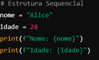
- Explicação: As linhas de código são executadas na sequência em que estão escritas. Primeiro, as variáveis nome e idade são definidas, e depois seus valores são impressos. 2. Estrutura de Decisão (Condicionais) - Descrição: A estrutura de decisão permite que o programa execute diferentes blocos de código com base em uma condição. Em Python, isso é feito principalmente com if, elif, e else. 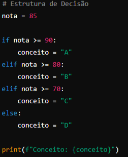 - Explicação: A nota do aluno é avaliada e, dependendo de seu valor, um conceito é atribuído. O bloco correspondente ao primeiro if ou elif cuja condição é verdadeira será executado. 3. Estrutura de Repetição (Laços) - Descrição: Estruturas de repetição permitem executar um bloco de código várias vezes. Python suporta laços for e while. 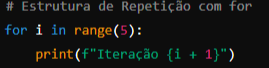 - Explicação: O laço for itera cinco vezes, de 0 a 4, imprimindo a mensagem de cada iteração. 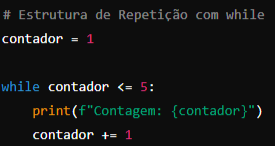 - Explicação: O laço while continua a executar o bloco de código enquanto a condição contador <= 5 for verdadeira. A variável contador é incrementada em cada iteração. 4. Estrutura de Funções - Descrição: Funções são blocos de código reutilizáveis que executam uma tarefa específica. Elas são definidas usando a palavra-chave def. 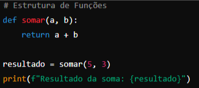 - Explicação: A função somar é definida para receber dois parâmetros e retornar sua soma. Ela é chamada com os valores 5 e 3, e o resultado é impresso. 5. Estrutura de Módulos - Descrição: Em Python, você pode dividir seu código em vários arquivos (módulos) e importá-los conforme necessário. Isso melhora a organização e a reutilização do código. 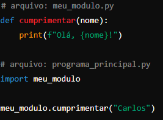 - Explicação: O código da função cumprimentar está em um arquivo separado (meu_modulo.py). No arquivo principal, ele é importado e utilizado, o que demonstra como os módulos ajudam a organizar o código. 6. Estrutura de Classes (Programação Orientada a Objetos) - Descrição: Python é uma linguagem orientada a objetos, o que significa que você pode criar classes para modelar objetos do mundo real e suas interações. 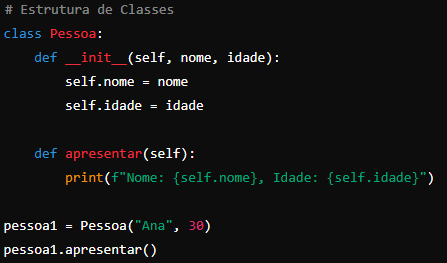 - Explicação: A classe Pessoa tem um construtor (__init__) que inicializa os atributos nome e idade. O método apresentar exibe esses valores. Um objeto pessoa1 é criado a partir da classe e o método apresentar é chamado. Variáveis• Python é uma linguagem de tipagem dinâmica, o que significa que você não precisa declarar explicitamente o tipo de uma variável; o Python o deduz automaticamente com base no valor atribuído. Aqui estão os principais tipos de variáveis em Python: 1. Inteiros (int): Números inteiros, positivos ou negativos. idade = 30 2. Ponto Flutuante (float): Números reais com parte decimal. altura = 1.75 3. Strings (str): Cadeias de caracteres, usadas para texto. nome = "Maria" 4. Booleanos (bool): Valores lógicos, True ou False. ativo = True 5. Listas (list): Coleções ordenadas e mutáveis de elementos. numeros = [1, 2, 3, 4, 5] 6. Tuplas (tuple): Coleções ordenadas e imutáveis de elementos. coordenadas = (10, 20) 7. Dicionários (dict): Dicionários (dict): pessoa = {"nome": "João", "idade": 30} 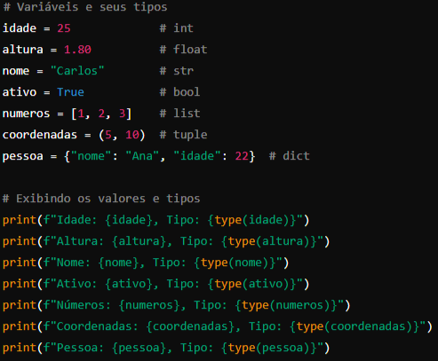 • O código acima declara variáveis de diferentes tipos e as exibe junto com seus respectivos tipos usando a função type(). • Python infere automaticamente o tipo da variável com base no valor atribuído. Operadores• Operadores em Python são símbolos que realizam operações sobre valores e variáveis: aritméticos para cálculos matemáticos; de atribuição para atribuir e atualizar valores; de comparação para comparar valores; lógicos para combinar condições booleanas; de identidade para verificar se dois objetos são o mesmo na memória; e de associação para verificar se um valor está presente em uma sequência. Operadores aritméticos:Os operadores aritméticos são utilizados na execução de operações matemáticas, tais como a soma e a subtração, por exemplo. Vejamos na Tabela 1 a lista deles.
• Exemplo: 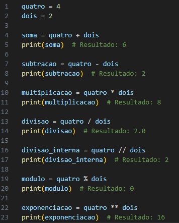 Operadores de atribuição:- Os operadores de atribuição atribuem valor a uma variável. Na Tabela 2 temos uma lista desses operadores.
• Exemplo: 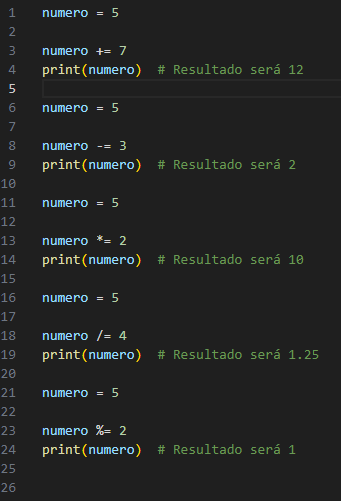 Operadores de comparação:- Os operadores de comparação são usados para comparar valores, o que vai retornar True ou False, dependendo da condição. A seguir, na Tabela 3 temos exemplos de alguns usados no Python.
• Exemplo: 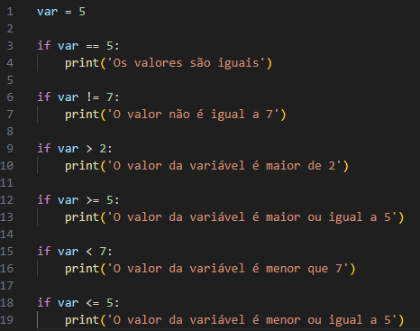 Operadores lógicos:- Os operadores lógicos são usados para unir duas ou mais expressões condicionais. Isso é feito por meio de conectivos, como podemos ver na Tabela 4.
• Exemplo: 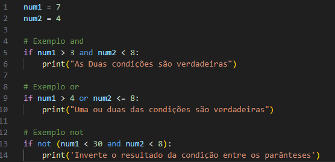 Operadores de identidade:- Os operadores de identidade servem para a comparação de objetos. Nessa comparação é verificado se eles ocupam a mesma posição na memória, o que significará que se trata do mesmo objeto, como vemos isso na Tabela 5.
• Exemplo: 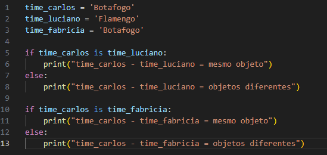 Operadores de associação:- Os operadores de associação são utilizados para verificar se uma sequência contém um objeto. Na Tabela 6 temos os exemplos.
• Exemplo: 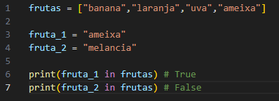 Estruturas de controle• Estruturas de controle em Python são usadas para dirigir o fluxo de execução do programa, permitindo que ele tome decisões, repita ações ou alterne entre diferentes caminhos com base em condições específicas. As principais estruturas de controle são: - Condicionais (if, elif, else):Permitem a execução de blocos de código com base em condições. Se a condição do if for verdadeira, o bloco de código associado é executado; caso contrário, pode-se verificar outras condições com elif ou executar um bloco else caso nenhuma condição seja atendida. 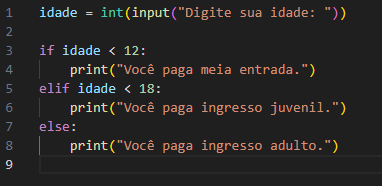 - Laços de repetição (for, while):Repetem um bloco de código várias vezes. • for: Itera sobre uma sequência (como uma lista ou string) e executa o bloco de código para cada elemento. 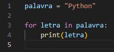 • while: Repete o bloco de código enquanto a condição especificada for verdadeira. 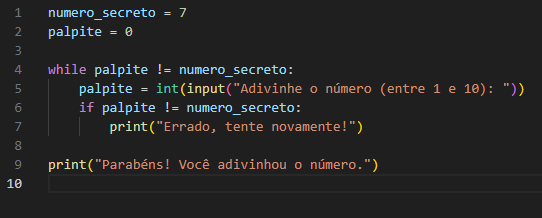 - Comandos de controle de loop (break, continue, pass):• break: Interrompe o loop imediatamente. 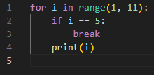 • continue: Pula a iteração atual do loop e continua com a próxima. 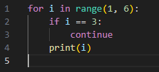 • pass: Usado como um placeholder quando um bloco de código é necessário sintaticamente, mas não precisa executar nada. 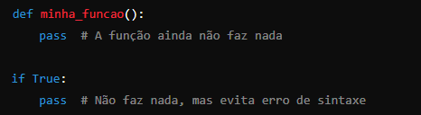 • Essas estruturas de controle são essenciais para criar lógica em programas Python, permitindo tomar decisões, repetir tarefas e controlar o fluxo de execução de maneira eficiente. Instalação e configuração, história da linguagem... |
|---|